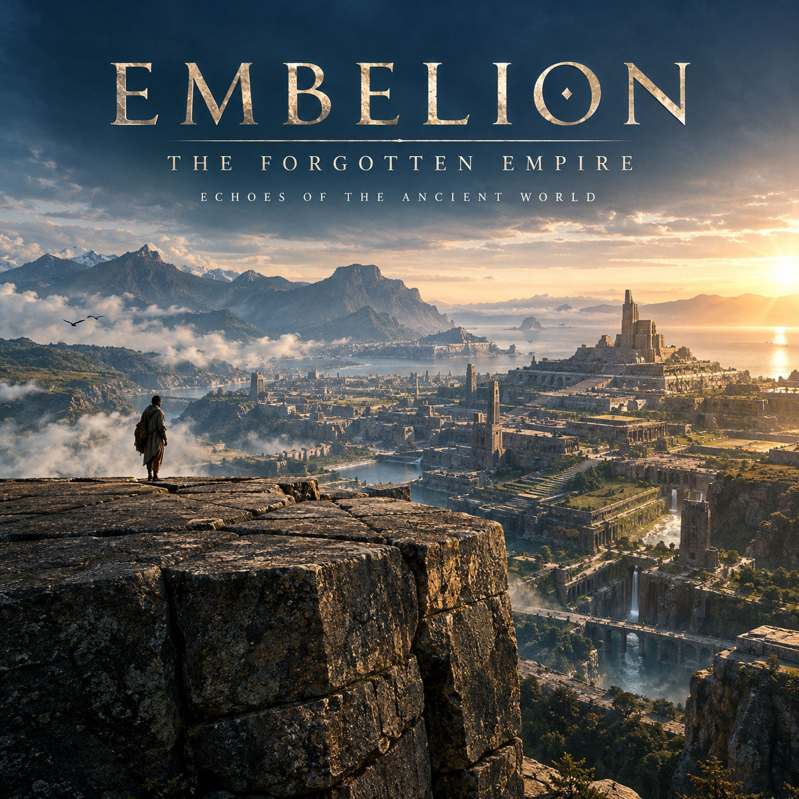

P · 16

EMBELION
Cinematic New Age · Ambient
SOON
EMBELION — The Forgotten Empire: Echoes of the Ancient World. A musical journey into a forgotten civilization whose traces survive among monumental stone cities, ancient sanctuaries and remote mountain valleys.
SOON
Streaming links will be added closer to release.
TRACKLIST
1 ALBUM
- 01 The First Light
- 02 Before the Dawn
- 03 The Hidden Road
- 04 Beyond the Horizon
- 05 The Silent Kingdom
- 06 The Stone Gate
- 07 The Sacred City
- 08 The Last Temple
- 09 The Return
- 10 Afterlight (Ancient Pulse Remix)
2001 · Ambient · Soundtrack
1 Album